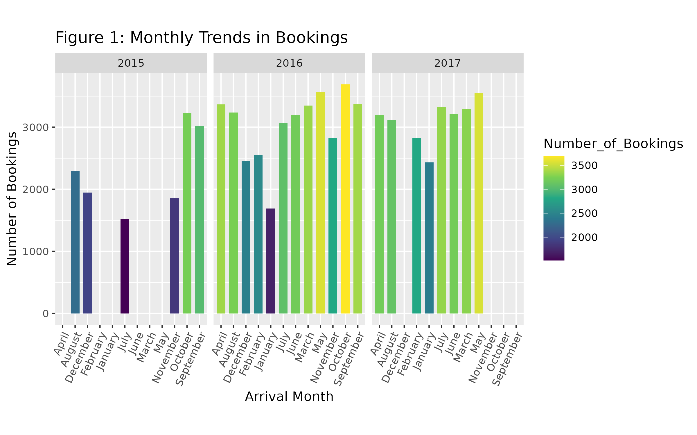
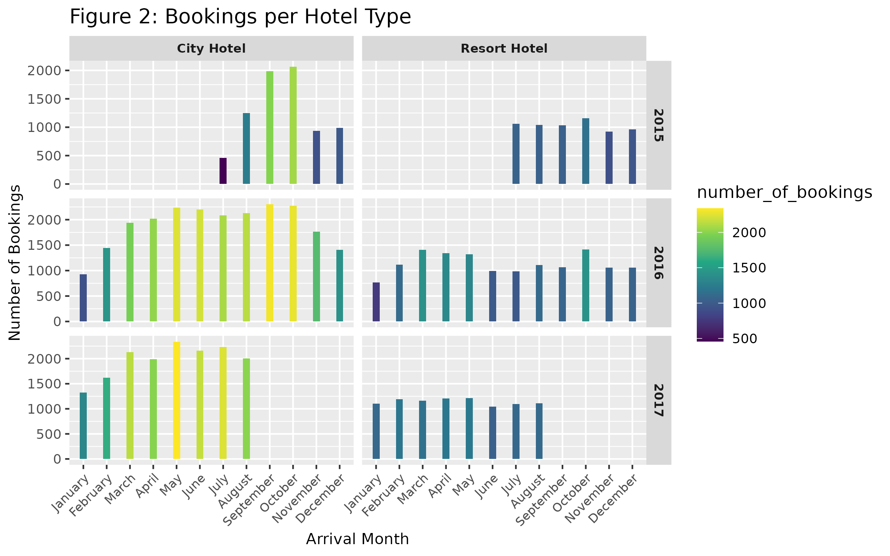
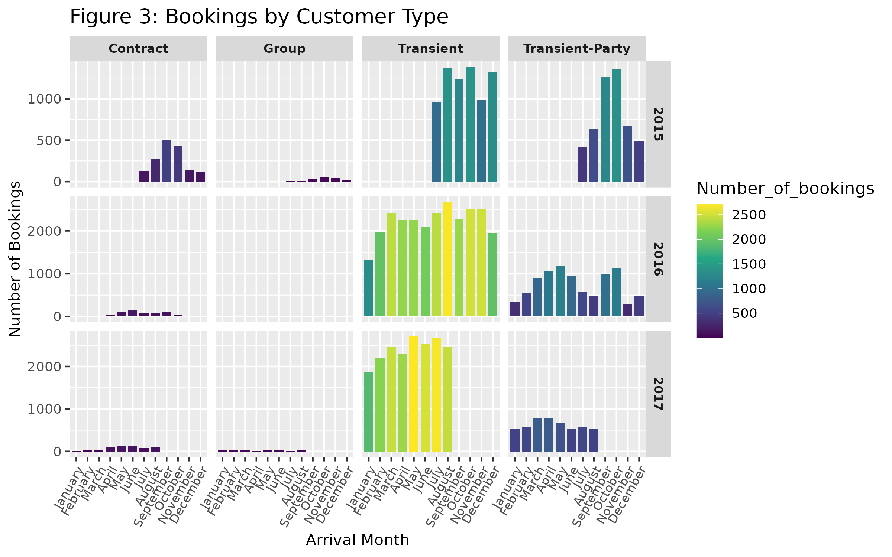
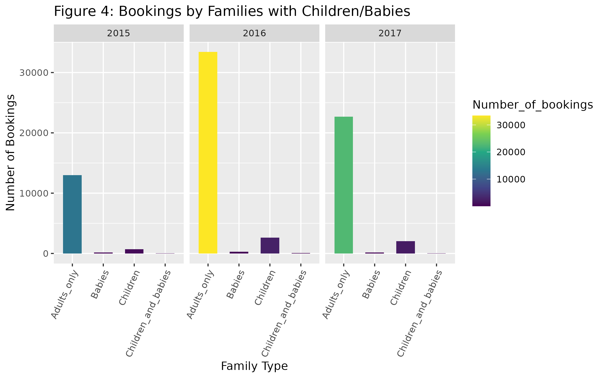
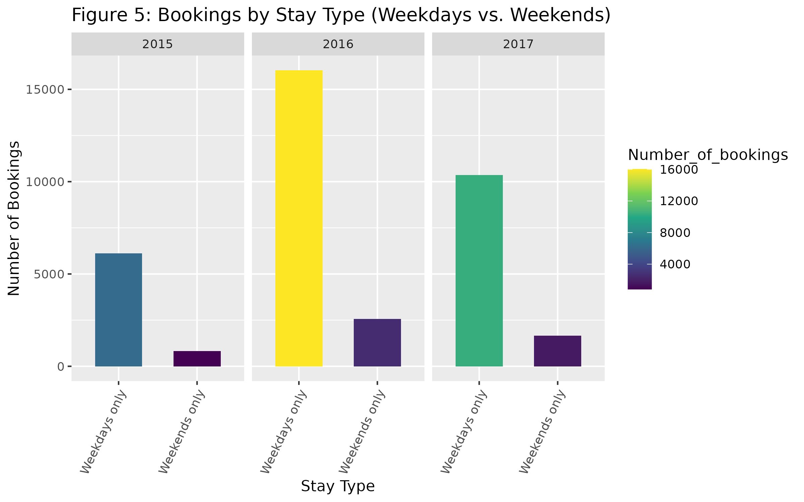
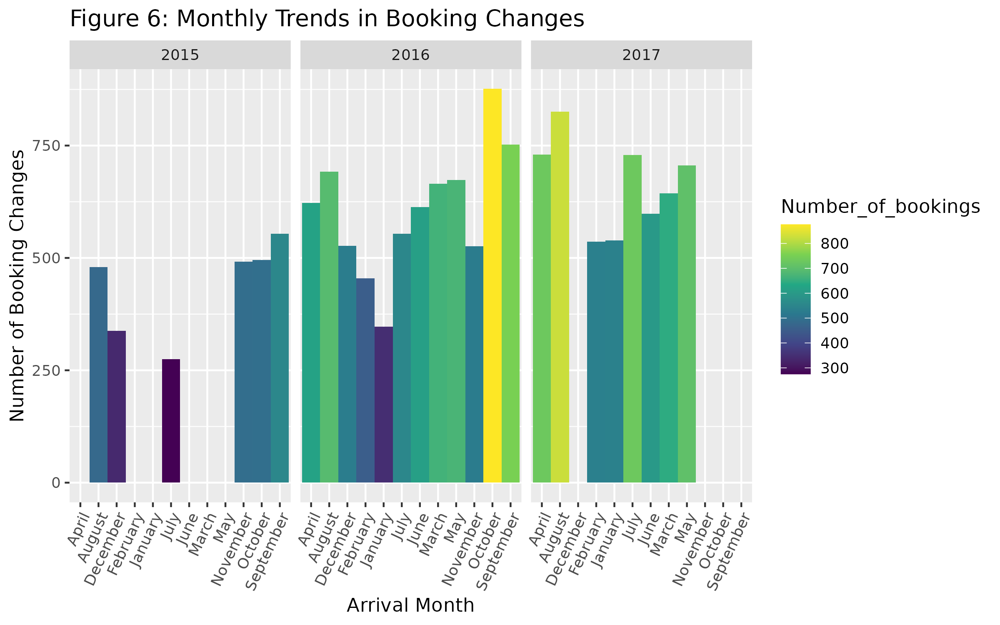
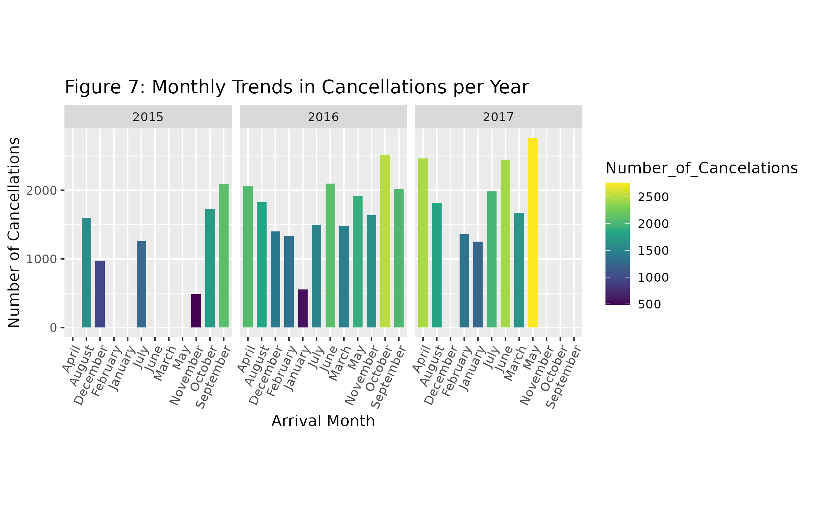

Author: Michalis Loizos
Date: May 9, 2025
Project Type: Independent Data Analytics Project
This independent project, developed to showcase my data analytics skills, analyzes 119,390 hotel bookings from 2015 to 2017 to deliver hospitality insights. Using BigQuery SQL, R (tidyverse, ggplot2), and other tools, the project provides actionable insights.
Before analysis, I inspected the dataset to determine if cleaning was required, checking for inconsistencies or missing values. No major cleaning was necessary beyond handling missing data for 2015.
The analysis begins by examining monthly booking trends for the available time period, covering 2015, 2016, and 2017. The bookings per year per month are visualized in Figure 1. As expected, bookings peak during specific months.
Next, the bookings were evaluated in terms of hotel type. Specifically, during the recorded data period, 38.5% of bookings were made in Resort Hotels, while 61.5% were for a City Hotel. This can be visualized in Figure 2.
Bookings were then categorized by customer type: Transient, Transient-Party, Group, and Contract. Of the total non-canceled bookings, 70.6% were made by Transient customers (Figure 3).
I then determined what percentage of bookings were made by families with children and/or babies (Figure 4). Of the total bookings, 7.1% were from families with children, 0.8% were families with babies, and 0.1% were families with both children and babies.
I then analyzed whether bookings involved stays only on weekdays, weekends, or both, with results shown in Figure 5. Of the bookings, 42.7% stayed on weekdays only, 50.5% stayed during weekends, and 6.8% stayed during both.
In this section, I analyzed booking changes, starting by examining available data to observe any monthly trends. Figure 6 shows no significant trends (sharp peaks or minimums). This suggests that booking changes were consistent throughout the years.
Finally, I investigated cancellations. As seen in Figure 7, there is no apparent trend in monthly cancellations (no sharp peaks or minimums). This consistency suggests the hotel can maintain steady cancellation rates.
Data from 2015 and 2017 are included in the report; however, since data for several months are missing for 2015 and some for 2017, no definite conclusions can be drawn for 2015 especially. Additionally, external factors (e.g., marketing campaigns, local events) were not considered in the analysis.
This project analyzed 119,390 hotel bookings from 2015 to 2017, uncovering key trends in bookings, cancellations, and customer behavior. Key findings include a peak in bookings during May for 2016 and 2017 and higher bookings for City Hotels compared to Resort Hotels.
This project showcases my skills in BigQuery SQL (data querying), R (tidyverse, ggplot2 for visualizations), Google Sheets (data cleaning), and Tableau (interactive maps), as well as my ability to deliver actionable insights.